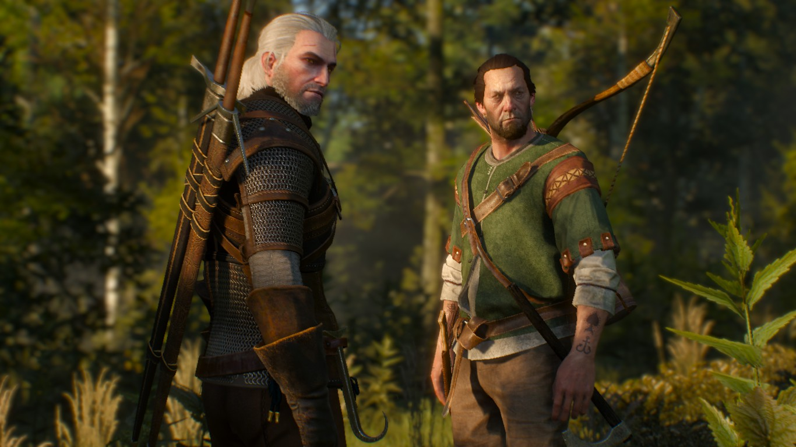
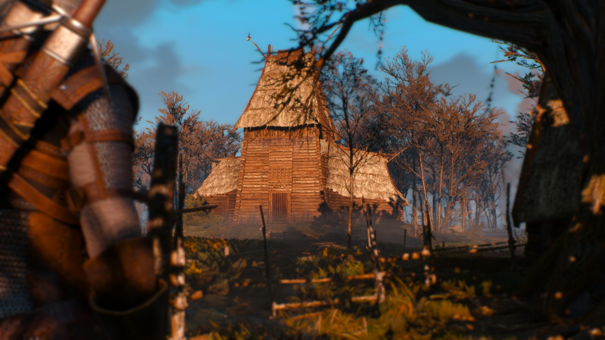
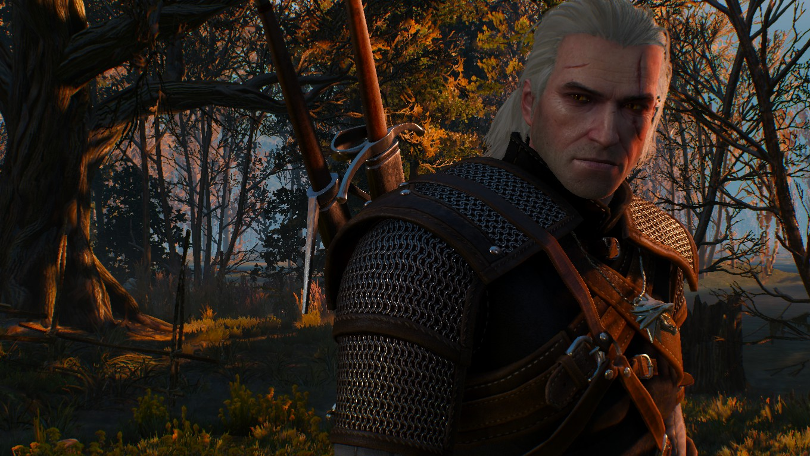
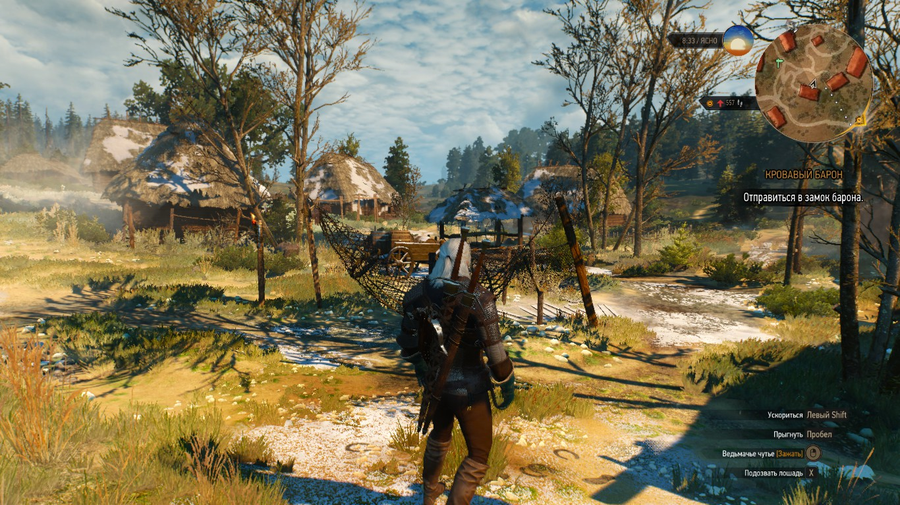
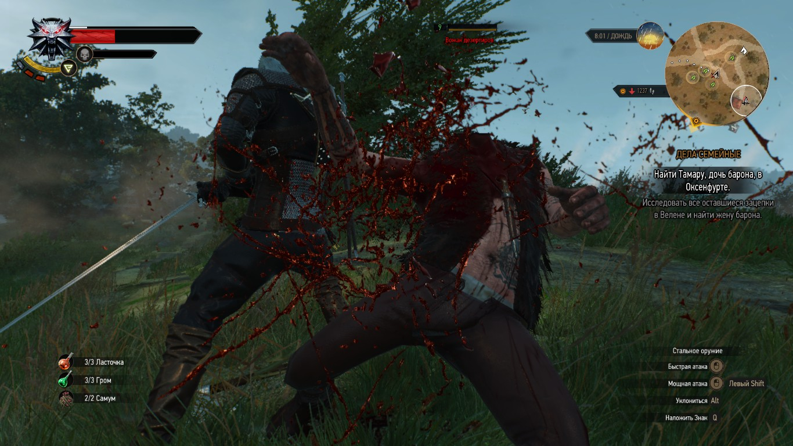
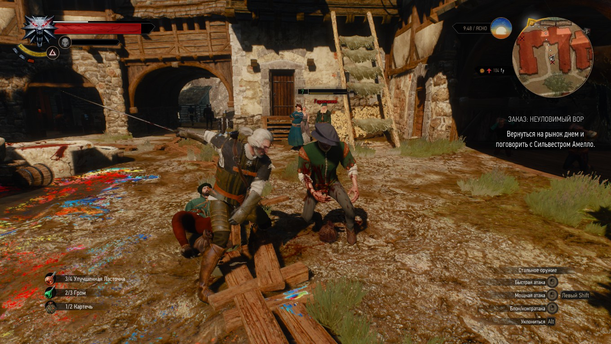

Как вы уже догадались речь пойдёт о легендарной игре Ведьмак заключительной серии трилогии. За плечами уже большая гора трупов нечистоплотных тварей и вурдалаков. Любой уважающий себя геймер знает, что игры отнимают слишком много времени которое можно было-бы потратить с пользой за чтением художественной литературы или изучением техники (или чего-то подобного, полезного). Но есть игры которые просто нельзя пропускать, одна из них это «Ведьмак» героя виртуального мира Геральта из Ривии.
Что нам говорит WiKi?
Ведьмак 3: Дикая Охота (польск. Wiedźmin 3: Dziki Gon, англ. The Witcher 3: Wild Hunt) — мультиплатформенная компьютерная ролевая игра, разработанная польской судией CD Projekt RED по мотивам серии романов «Ведьмак» польского писателя Анджея Сапковского, продолжение компьютерных игр «Ведьмак» и «Ведьмак 2: Убийцы королей». Заключительная часть трилогии. Изначально релиз игры был запланирован на 24 февраля 2015 года, но в декабре 2014 года было объявлено, что выход игры переносится на 19 мая 2015 года. Подробнее: на wiki
Мнение
Современные игры уже давно стали больше чем просто игры. Это даже больше чем кино, или книга! Здесь все герои (наших фантазий) оживают и происходит то чего не каждый ожидает. Полное погружение в мир игры. Не каждая игра может похвастаться столь яркой атмосферой. Мир игры проработан до мелочей, курей, птиц, зайцев и пожалуй самой реалистичной смены дня и ночи. Смена погоды тоже реалистична и непредсказуема. Пожалуй здесь самый реальный лес который я видел в видео играх.
Третья часть отличается от двух предыдущих самым обширным и открытым миром. Но самое главное и революционное в этой игре это построенная из деталей атмосфера, в которую нас затягивает по самые не балуйся. То каким и должен был быть первый Ведьмак. 10 из 10 баллов однозначно. Самое лучшее РПГ в открытом мире, с характерными живыми персонажами которым веришь, сопереживаешь.
п.с.: Конец..
Ведьмак - Дикая охота (мир игры)
Лихолесье, ведьмак .
  Геральд, кровь и меч.
  